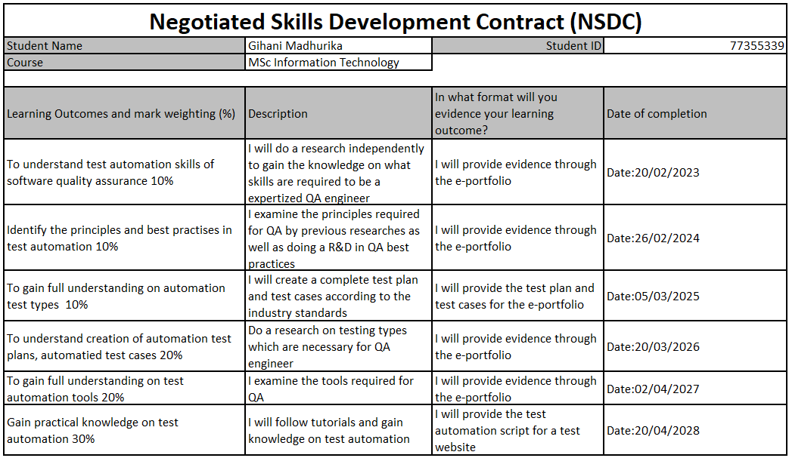
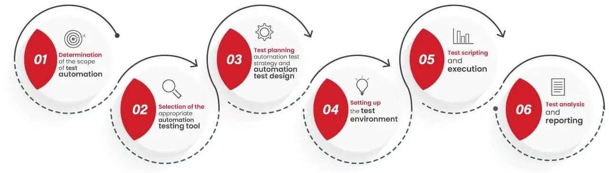

Introduction
This module focuses on negotiation and skill development in the areas such of Software Quality Assurance Engineering and this will provide us with the opportunity to increase and expand our knowledge as well as in a self-directed learning environment, I will conduct research and put current theory and practise to use in order to build high level abilities. In accordance with the topic "Software Quality Assurance Engineering", I will analyse the skills necessary for a QA engineer, evaluate the abilities I now possess, and identify the skills I will need to succeed in the industry.
My Profile
My name is Gihani Madhurika and I am a postgraduate student at Leeds Beckett University. I worked as a Software Quality Assurance Engineer and 4 years handling complete review process. Expertly assists IT design, testing and maintenance to preserve application effectiveness. Actively resolves technical complications during application QA testing.
- Full name: Makunda Gamage Gihani Madhurika
- Email: G.MakundaGamage2466@student.leedsbeckett.ac.uk
Through this ePortfolio I created a SWOT analysis that outlines my task-related Strengths, Weaknesses, Opportunities, and Threats in a concise manner. Moreover, A specific contract was established, recorded, and underlined with precise mission statements.
Rationale
A software quality assurance engineer is someone who keeps an eye on every stage of the process to ensure the software is designed well and meets the standards set by the development company (Indeed, 2022). Prior to being made available to the general public, new products are tested for functionality by software quality assurance engineers. As one of the most efficient and effective software methodologies, test automation is currently regarded as one of the most popular terms in the field of software testing, improving and elevating the entire software development/testing life cycle (Prasad.M, Harshal.S, 2016). The majority of software testers and QAs are switching from manual testing to automated testing these days as software testing moves towards automation.
My long term objective is to switch from manual testing to automation testing and to be an qualified test automation engineer with skills such as analytical thinking, functional testing skills, creation of test scripts, knowledge on automated testing tools, good, problem-solving skills, reporting skills, time management skills. I the present companies are moving to test automation in order to lower operating costs, improves accuracy and to increases the test coverage.
Negotiated Skills Development Learning Contract (NSDLC)
Assessing My Skills
With a clear focus on where I want to be in five years compared the skills I already possess and the things I would like to learn to the standards of the industry. After reviewing a number of websites, including Glassdoor, Linkedin, and Indeed, it became more obvious what kind of analysis I wanted to conduct. After comparing my SWOT with the demands of the industry, I was able to identify the skills I lack to become a qualified QA Automation engineer, as demonstrated below.
- SWOT
- Gannt Chart
- Initial skill audit
- Final skill audit
SWOT
SWOT, as it is commonly known, is a planning technique that aids individuals or organisations in identifying strengths, weaknesses, opportunities, and threats related to business competition. Through this, I was able to highlight my areas of strength and weakness in comparison to industry standards, which assisted me in developing a suitable contract.
- A strength is a resource or capacity the organisation can use effectively to achieve its objectives.
- A weakness is a limitation, fault, or defect in the organisation that will keep it from achieving its objectives.
- An opportunity is any favourable situation in the organisation's environment. It is usually a trend or change of some kind or an overlooked need that increases demand for a product or service and permits the firm to enhance its position by supplying it
- A threat is any unfavourable situation in the organisation's environment that is potentially damaging to its strategy. The threat may be a barrier, a constraint, or anything external that might cause problems, damage or injury (University of Cambridge, 2016)
GANNT CHART
This is a graph showing the activities in an e-portfolio over time. Monitoring the development was beneficial. This gantt chart displays the started and ended weeks as well as the percentage of the task that has been completed at each stage.
Initial skill audit
Before learning begins, these are the role requirements that are outlined in percentages.
Final skill audit
These are role requirements described in percentage after skills learnt . And showed improvement percentage of 31%. The improvement is plain to see in both the figures and in the graph, there is room and a need for improvement. The top five are the learning objectives that I set for myself. The evidence against all of these objectives can be found in amongst my pages.
Lesson Leant
Automated testing is used to run repetitive and regression tests that require constant iterations due to implementing frequent code changes. Automation testing is also preferred for load tests, helping to verify a system’s performance under load conditions
- The key function automation QA Engineers perform is writing scripts and creating automation environments for repeated tests
- Using different tools, they design, test, and deploy effective test automation solutions. Their goal is to automate as much of the testing effort as possible with a minimum set of code
- Test Automation Engineers use testing frameworks – sets of practices and tools – to create and design test cases more efficiently. An organized framework reduces maintenance costs and testing efforts while making test automation code reusable, maintainable, and stable
Test Automation Engineer responsibilities:
- Write, design, and execute automated tests by creating scripts
- Determine the priority for test scenarios and create execution plans to implement these scenarios
- Write documentation for automated processes including test plans, test procedures, and test cases
- Collating and monitoring the defect management process
- Managing the changes and executing regression tests
- Interacting with customers/clients to solve the various issues they face and updating on the situation
Life cycle of the automation testing:
- Determination of the scope of test automation- The starting point in automation testing is understanding the extent of automation that will work for the project at hand
- Selection of the most appropriate automation testing tool- Identifying the automation tool that is best suited for the requirement of the project makes for the next crucial step in the testing cycle
- Test planning, automation test strategy, and automation test design- In this step, the testing teams need to put in place the test creation standards and procedure, and decide upon the hardware, software, and network requirements, along with the test data
- Setting up the test environment- This step is all about setting up the test environment which basically involves determining the remote or virtual machines to be used for test cases
- Test scripting and execution- Once the test scripts are created with the aforementioned points in mind, the execution can take place
- Test analysis and reporting- Once the tests are executed and the test results are documented, then comes the final and in a way, the most critical stage in the automation testing life cycle, which is the analysis and reporting phase
Test automation
In the world of software, there are two types of testing: manual and automated. Test automation is the practise of automatically running tests, managing test data, and using results to raise the calibre of software. Although it is primarily a quality control measure, the entire software development team is required to participate in its activities. To maximise test automation, everyone must be involved, from business analysts to developers and DevOps engineers.
Test automation process
Step 1: Defining the Scope of Automation
Need to define the scope of automation under test that will be automated as well as have to make sure that we have walked through and know precisely the team’s test state, the amount of test data, also the environment where tests take place.
Step 2: Selecting a Testing Tool
After determining the scope, it is now time for you to pick up a tool for automation testing. We can select it from a wide range of automation tools available in the market. It depends on the technology on which the application tests are built. Each type of tool or framework may serve different demands.
Step 3: Planning, Designing, and Development
At this stage, need to create an automation strategy and plan. This plan can include the, automation testing framework design and its features A detailed test plan for scripting and executing test cases , In-scope and Out-of-scope items of automation , Goals and deliverables of automation testing process
Step 4: Executing Test Cases
Once finishing all of the preceding steps, it is time to take action! Need to write the scripts, and run the test automatically, by running the code directly.
Step 5: Build test reports
After execution, the test report provides a consolidated summary of the testing performed so far for the project.
Step 6: Maintaining previous test cases
Test maintenance is unavoidable to expand your collection of reusable test scripts. Once automated tests have been scripted and running, they still need updating if the application changes the next time
Evidence against NSDC
Test automation skills
I have been able to understand the skills required for a test Automation Engineer
Principles & best practices in test automation
I have been able to understand the principles & best practices required for a test Automation Engineer
Automation test types
I have been able to understand the automation test types required for a test Automation Engineer
Test automation plan & test cases
I have been able to understand how to create the automation test plan & test cases
Test automation tools
I have been able to find the test automation tools which are required complete the scripts
REFERENCES AND BIBLOGRAPHY
REFERENCES
- https://www.indeed.com/career-advice/finding-a-job/what-is-software-quality-engineering.
- https://www.researchgate.net/publication/299570995_Automation_Testing_In_Software_Organization